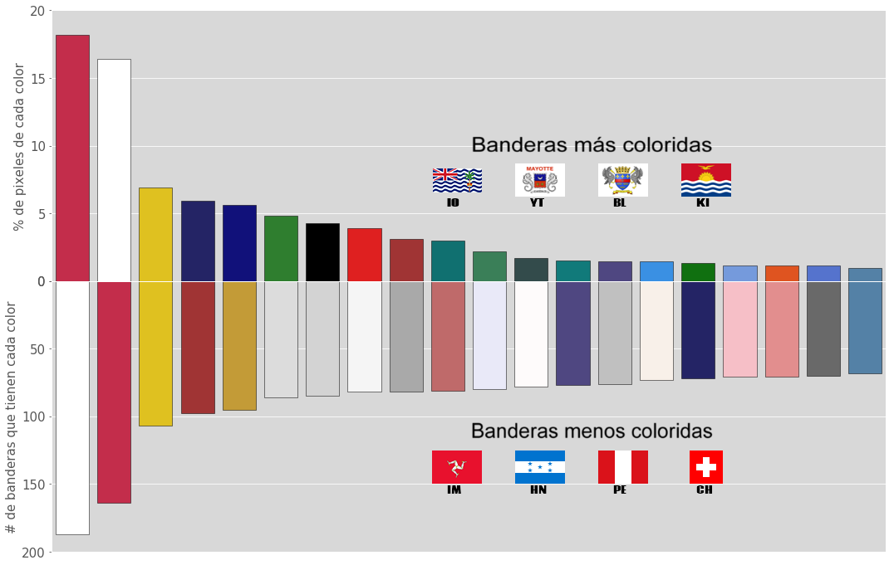
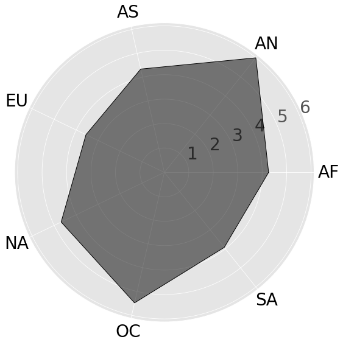

Banderas del Mundo
¿Alguna vez te preguntaste cual es el color mas común en las banderas del mundo, o cual es el país con la bandera más y menos colorida, o cuales países tienen más rojo o más verde o más azul en sus banderas? Si es así pues estas en el lugar correcto. En la siguiente página se mostraran varias visualizaciones donde tu mismo podrás jugar con algunos controles para descubrir cosas acerca de las banderas del mundo.
Distribución por colores
Primero que todo, vamos a observar cómo estan distribuidos los colores
en las banderas del mundo. En el siguiente gráfico podemos observar dos porciones, una
hacia arriba y una hacia abajo. La parte que esta hacia arriba es el % de pixeles de
cada color, es decir, el color de la barra esta contenido en x% del total de pixeles de
todas las banderas. Por ejemplo podemos ver que aproximadamente el 18% de todos los
pixeles de todas las banderas es rojo que es la primera barra.
Ahora, hacia abajo podemos ver cuantas banderas tienen cada color, haciendo el mismo
ejemplo que en la parte de arriba, podemos ver que casi 160 banderas tienen el color
rojo en algun pixel de su bandera.
Finalmente, podemos observar que hay dos grupos de banderas arriba y abajo, pues como su
título lo indica, son aquellas banderas con mas colores y aquellas con menos colores.
Banderas mas coloridas:
- British Indian Ocean Territory
- Mayotte
- Saint Barthélemy
- Kiribati
Banderas menos coloridas:
- Isle of Man
- Honduras
- Perú
- Switzerland
Colores en banderas del mundo

Colores en el mapa
Ahora vamos a ver un grafico dinámico de las banderas en el mapa.
Primero veremos el mapa con unos colores que parecen aleatorios. Pues el color de cada
país es el color promedio de su bandera. Por ejemplo Brasil tiene mucho verde en su
bandera, pues finalmente su color promedio será muy verde, o en el caso de Australia
será muy azul.
Ahora, este mapa no solo está coloreado. Si pasas el mouse por encima de cada país se
puede ver que aparece su bandera junto con el nombre del país. Además se haces clic en
el país, mas abajo aparecerá el nombre, bandera, población, area y las banderas de los
paises fronterizos junto con sus codigos de 2 letras.
Mas abajo, hay 3 sliders, uno para el color rojo, otro para el verde y finalmente uno
para el azul. Estos sliders permiten visualizar cuales países superan el umbral que
queremos. Por ejemplo si llevamos el slider del rojo a un valor alrededor de 200 y
dejamos los otros dos en 0, podremos visualizar los países que su promedio de rojo
supera los 200 (valor de rgb), y el verde y azul supera los 0, es decir no afecta el
verde o azul. Luego presionamos actualizar y podemos observar que solo quedan paises
muy rojos, como Canadá, China, Turquia, España, y otros.
Es interesante ver como por ejemplo si filtramos por países azules (180 en azul),
aparece japón que solo tiene blanco y rojo. Esto se da porque el blanco tiene todos los
colores, por lo que hará que el promedio sea mayor para tanto rojo, verde y azul.
Name: Colombia

Population: 48759958
Area(km^2): 1141748